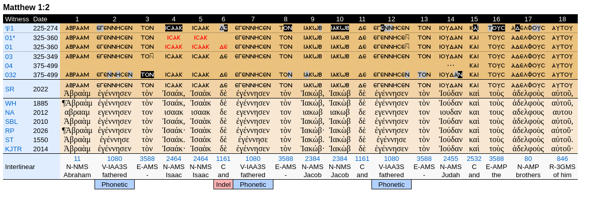

list of CNTR suggestions
- [AI could help having a good first version] Offering as many as possible uncial
greek fonts. In order to help people
displaying the New Testament Greek Text. With provided the CSS snippet, zip file, and license to use them on HTML pages.
- [AI could help having a good first version] A copy button next to each manuscript/critical
text in the collation in order to
copy easily and without error a passage of certain a manuscript/critical text. Same with the translations.
- Being able to get somewhere in the website the pdfs/facsimiles of all the books used for paleography, in
order for the people to be able to go check the book when something is weird about a scribal edition in
the collation.
- [AI could help having a good first version] for later: somewhere in the website, a page helping the random christian to learn Greek :
the 'best' paths for him to follow, some example of universities (e.g, POLIS), smartphone applications,
books or ressources, adivces.
- avoir la possibilite de comparer les textes grecs seulements sur une portion de texte donnee (afin/permet d'avoir acces aux statistiques sur cette portion plutot que sur tout le texte), et
avoir le type de difference pour chaque difference par exemple transposition, subsititution, homoteleuton, etc., et pouvoir selectionner (checkbox) le type de difference (on pourrait selectionner All pour toutes)
que l'on veut voir (ca donnerait ainsi aussi les statistiques seulement sur ces differences), pouvoir pour une portion de texte choisie voir quels sont les textes grecs les plus
proches d'un texte grec selectionne, par ordre croissant ou decroissant
- To have a dedicated webpage demonstrating as best as possible
why/how the New Testament was originally written in Greek
- to have for each critical text, the pdf/article/ressource/whitepaper explaining the critical text, on how it differs from
others, what are its caracteristics, and so on. With link to the website of the authors.
- Having a visual seperation for the edition of manuscript for instance 01*, in order to help counting easily how
differnt manuscripts before 500AD we have. see for
example the image below (border-top&bottom: 1px black dotted; used) :
